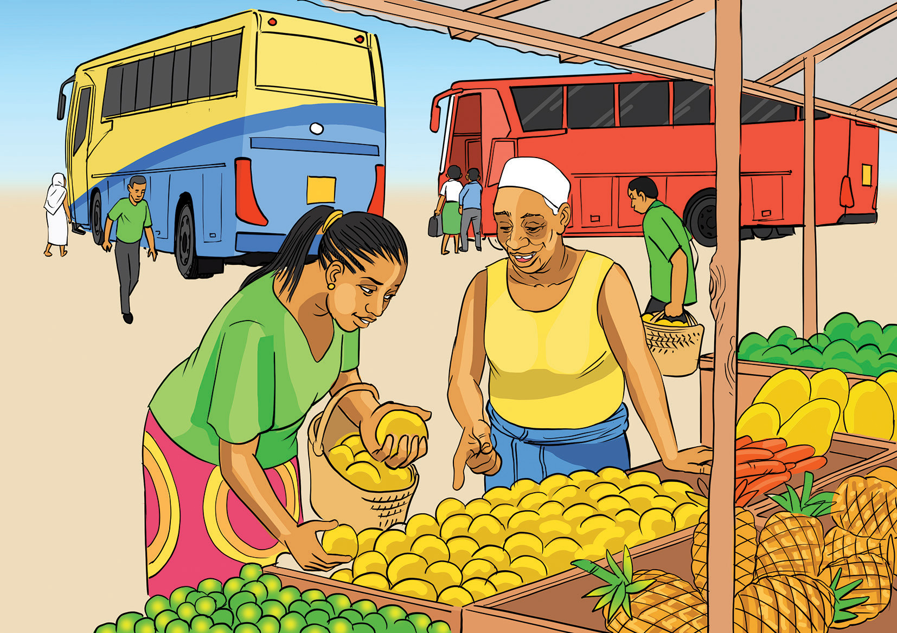

a business, and ‘proprietor’ means the owner of a business. This means that sole proprietorship is a business which is owned, managed, and controlled by one person namely, the sole proprietor. Other examples of sole proprietorships are small shops, salons, butchers, hawkers, restaurants, fruits and food vendors. Figure 3.2 shows a fruits vendor selling various fruits.

Sole proprietorship is the simplest and the most common form of business ownership which has existed for decades. Most people prefer to operate as sole proprietors for a variety of reasons, including establishing a business that makes use of their skills and allowing them to be their own bosses. This makes them flexible in decision making on matters such as when and how many hours to work and what products to make.
Activity 3.2

Based on the scenario on Julianas’ tailoring business in Activity 3.1:
(a) Elaborate on the features of sole proprietorships and how those features are beneficial to future sole proprietors? and
(b) Create your own scenario about features of sole proprietorship.